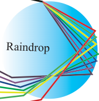

Formation of rainbow
The rainbow phenomenon can be observed when there are water droplets in the atmosphere as the sun shines from behind the observer at a low altitude. The rainbow’s appearance is caused by the dispersion of sunlight as it is refracted by nearly circular raindrops. The white light from the sun is first refracted as it enters the surface of the raindrops.
When light travels from a less dense medium to a light denser medium, it bends towards the normal. However, not all colours bend equally. As in a glass prism, red light bends the least while violet bends the most. At the back of the raindrops, some of the dispersed light is reflected back over a wide range of angles and again refracted as it leaves the raindrop. In most cases, the violet light leaves the raindrop at a smaller angle relative to incident sunlight compared to red light as shown in Figure 5.17 (a). As a result, the observer sees an image of well-arranged coloured bands in the atmosphere called a rainbow, with red light appearing on top and violet at the bottom of the spectrum as shown in Figure 5.17 (b).
